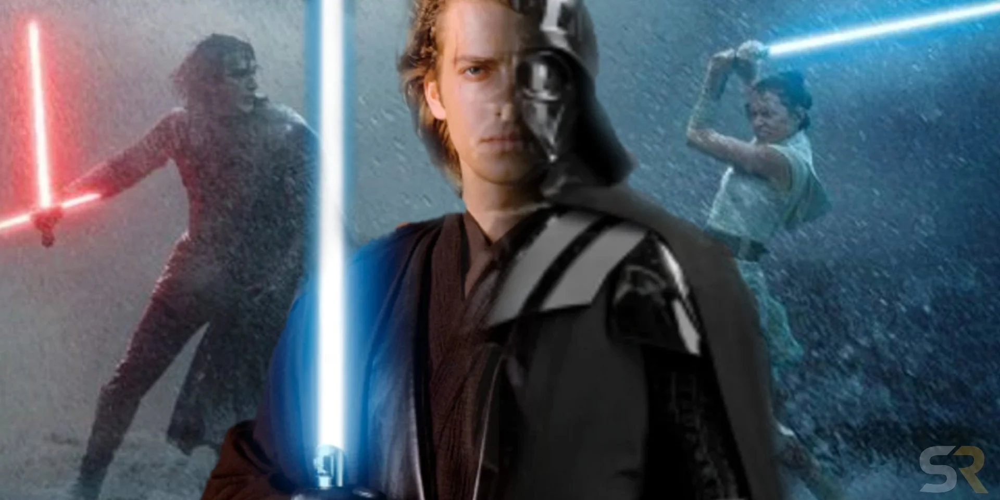

About Darth
Darth Vadar is scary and has kiiled a lot of people bu tended up being nice
Darth Vadar thinking
- He is thinking about something
- He is a goat
Vadar's friends
His son, he loves but tried to kill. Click on links below to read more about him.